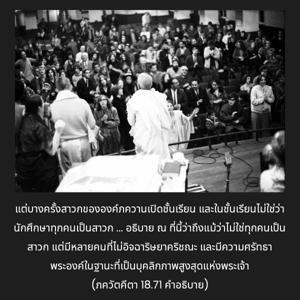

และผู้ที่สดับฟังด้วยความศรัทธาโดยปราศจากความอิจฉาริษยาจะเป็นอิสระจากผลบาป และบรรลุถึงโลกอันเป็นสิริมงคลที่คนมีบุญบารมีพำนักอาศัยอยู่

โศลกที่หกสิบเจ็ดของบทนี้องค์ภควานฺทรงห้ามไว้อย่างชัดเจนว่า ไม่ควรสอน คีตา แก่พวกที่อิจฉาริษยาพระองค์ อีกนัยหนึ่ง ภควัท-คีตา มีไว้สำหรับสาวกเท่านั้น แต่บางครั้งสาวกขององค์ภควานฺเปิดชั้นเรียนและในชั้นเรียนไม่ใช่ว่านักศึกษาทุกคนเป็นสาวก คำถามคือแล้วทำไมจึงเปิดชั้นเรียน ได้อธิบายตรงนี้ว่าถึงแม้ว่าไม่ใช่ทุกคนเป็นสาวกแต่มีหลายคนที่ไม่อิจฉาริษยาองค์กฺฤษฺณ และมีความศรัทธาพระองค์ในฐานะที่เป็นบุคลิกภาพสูงสุดแห่งพระเจ้า หากบุคคลเหล่านี้สดับฟังเกี่ยวกับองค์ภควานฺจากสาวกผู้ที่เชื่อถือได้ผลก็คือ พวกเขาจะเป็นอิสระจากผลบาปทั้งปวงทันที และหลังจากนั้นจะบรรลุถึงระบบดาวเคราะห์ที่คนมีคุณธรรมทั้งหลายอาศัยอยู่ ดังนั้นเพียงแต่สดับฟัง ภควัท-คีตา แม้บุคคลผู้ไม่พยายามเป็นสาวกผู้บริสุทธิ์จะบรรลุถึงผลแห่งกิจกรรมที่มีคุณธรรม ดังนั้นสาวกผู้บริสุทธิ์ของพระองค์เปิดโอกาสให้ทุกๆคนเป็นอิสระจากผลบาปทั้งหมด และมาเป็นสาวกขององค์ภควานฺ
โดยทั่วไปผู้ที่เป็นอิสระจากผลบาป พวกที่มีคุณธรรมจะปฏิบัติกฺฤษฺณจิตสำนึกได้โดยง่ายดาย คำว่า ปุณฺย-กรฺมณามฺ มีความสำคัญมากตรงนี้ ซึ่งหมายถึงการปฏิบัติพิธีบูชาที่ยิ่งใหญ่ เช่น อศฺวเมธ-ยชฺญ ที่ได้กล่าวไว้ในวรรณกรรมพระเวท พวกที่มีคุณธรรมปฏิบัติการอุทิศตนเสียสละรับใช้แต่ยังไม่บริสุทธิ์ทีเดียวสามารถบรรลุถึงระบบดาวเคราะห์ของดาวเหนือหรือ ธฺรุวโลก ที่ ธฺรุว มหาราช สาวกผู้ยิ่งใหญ่ขององค์ภควานฺทรงประทับอยู่ และทรงมีดาวเคราะห์พิเศษเรียกว่า ดาวเหนือ